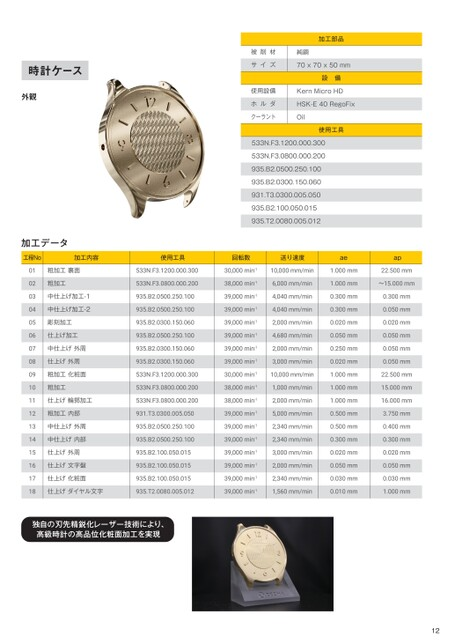

時計ケース外観被削材サイズ使用設備ホルダクーラント加工部品純銅70x70x50mm設備KernMicroHDHSK-E40RegoFixOil使用工具533N.F3.1200.000.300533N.F3.0800.000.200935.B2.0500.250.100935.B2.0300.150.060931.T3.0300.005.050935.B2.100.050.015935.T2.0080.005.012加工データ工程No加工内容使用工具回転数送り速度aeap533N.F3.1200.000.30030,000min-110,000mm/min1.000mm22.500mm533N.F3.0800.000.20038,000min-16,000mm/min1.000mm〜15.000mm仕上げダイヤル文字935.T2.0080.005.01239,000min-11,560mm/min0.010mm独自の刃先精鋭化レーザー技術により、高級時計の高品位化粧面加工を実現粗加工裏面粗加工中仕上げ加工-1中仕上げ加工-2彫刻加工仕上げ加工中仕上げ外周仕上げ外周粗加工化粧面粗加工仕上げ輪郭加工粗加工内部中仕上げ外周中仕上げ内部仕上げ外周仕上げ文字盤仕上げ化粧面010203040506070809101112131415161718935.B2.0500.250.10039,000min-14,040mm/min0.300mm935.B2.0500.250.10039,000min-14,040mm/min0.300mm935.B2.0300.150.06039,000min-12,000mm/min0.020mm935.B2.0500.250.10039,000min-14,680mm/min0.050mm935.B2.0300.150.06039,000min-12,000mm/min0.250mm935.B2.0300.150.06039,000min-13,000mm/min0.020mm533N.F3.1200.000.30030,000min-110,000mm/min1.000mm533N.F3.0800.000.20038,000min-11,000mm/min1.000mm533N.F3.0800.000.20038,000min-12,000mm/min1.000mm931.T3.0300.005.05039,000min-15,000mm/min0.500mm935.B2.0500.250.10039,000min-12,340mm/min0.500mm935.B2.0500.250.10039,000min-12,340mm/min0.300mm935.B2.100.050.01539,000min-13,000mm/min0.020mm935.B2.100.050.01539,000min-12,000mm/min0.050mm935.B2.100.050.01539,000min-12,340mm/min0.030mm0.300mm0.050mm0.020mm0.050mm0.050mm0.050mm22.500mm15.000mm16.000mm3.750mm0.400mm0.300mm0.020mm0.050mm0.030mm1.000mm12
